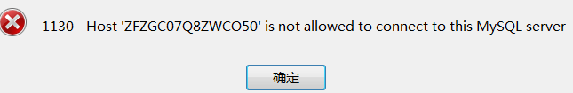
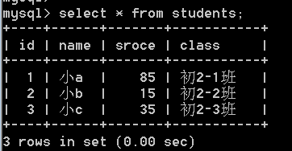

原文连接:https://www.cnblogs.com/lifexy/p/10938382.html
在上章学习了42.QT-操作SQLite数据库后,发现MySQL和SQLite的语句都大致相同,所以本章只测试MySQL是否能使用
MySQL安装参考链接:https://blog.csdn.net/qq_38455201/article/details/83419450
1.由于QT版本是32位,所以MySQL安装也得是32位
2.MySQL安装
下载地址https://dev.mysql.com/downloads/mysql/5.7.html#downloads,选择32位的:
下载完成后解压到: D:\MySQL5.7_win32
然后配置Path环境变量
新增变量名:
然后在Path变量里添加路径:
- %MYSQL_HOME%：表示变量名,等价于D:\MySQL5.7_win32\mysql-5.7.26-win32
配置文件
首先在D:\MySQL5.7_win32\mysql-5.7.26-win32里创建data文件夹,用来mySQL存储数据.
然后在D:\MySQL5.7_win32\mysql-5.7.26-win32里创建my.ini文件(在linux下则为my.cnf):
[mysql]
# 设置mysql客户端默认字符集
default-character-set=utf8
# 数据库服务端配置项
[mysqld]
# 设置3306端口
port = 3306
# 设置MYSQL的安装目录
basedir= D:\\MySQL5.7_win32\\mysql-5.7.26-win32
# 设置MYSQL数据库的数据的存放目录
datadir=D:\\MySQL5.7_win32\\mysql-5.7.26-win32\\data
# 允许最大连接数
max_connections=200
# 服务端使用的字符集设置为utf8
character-set-server=utf8
# 创建新表时将使用的默认存储引擎
# default-storage-engine=INNODB
#设置模式
sql_mode=NO_ENGINE_SUBSTITUTION,STRICT_TRANS_TABLES
# skip-grant-tables跳过密码验证,一般忘记密码,才是用它,重新改密码
#skip-grant-tables
[WindowsMySQLServer]
Server= D:\\MySQL5.7_win32\\mysql-5.7.26-win32\\bin\\mysqld.exe安装MySQL服务以及初始化
打开CMD输入:
mysqld install //安装SQL后台服务程序(mysqld),mysqld用来实现让客户端通过连接服务器来访问数据库 mysqld --initlialize //初始化mysqld net start mysql //启动MySQL
更改密码
首先找到初始密码,密码位于data文件夹*.err文件里:
打开,找到密码为N0aeT3lp.tzy:

继续在CMD中输入:
mysql -u root –p //-u表示输入用户名,-p表示输入密码,按下回车后则会要求输入密码N0aeT3lp.tzy alter user root@localhost identified by '123456'; //改为123456
修改密码也可以输入:
set password for root@localhost = password('123'); //修改密码为123
使用navicat管理数据库工具连接数据库
使用navicat工具可以方便操作数据库,下载后,我们通过ip地址访问时,发现打印如下所示:

打开CMD配置
GRANT ALL PRIVILEGES ON *.* TO 'myuser'@'%' IDENTIFIED BY 'mypassword' WITH GRANT OPTION; //修改,允许所有访问 flush privileges; //使修改立即生效
如下图所示:
然后再次通过ip地址访问,发现OK:
3.接下来开始使用QT测试(使用QT5.7版本)
连接MySQL发现打印:
因为缺少驱动文件libmysql.dll,该文件位于: D:\MySQL5.7_win32\mysql-5.7.26-win32\lib
方法1:
将libmysql.dll复制到Qt5.7.1\5.7\mingw53_32\bin目录下
方法2:
将libmysql.dll复制到debug或者release下
开始测试
1)首先创建一个students数据库:
2)写QT代码
QSqlDatabase db = QSqlDatabase::addDatabase("QMYSQL"); db.setHostName("192.168.0.100"); //如果填入localhost,则表示链接本地的数据库 db.setDatabaseName("students"); //要连接的数据库名 db.setUserName("root"); db.setPassword("sql"); db.setPort(3306); if(db.open()) { query.exec("DROP TABLE students"); //删除名为students的表 query.exec("CREATE TABLE students(" "id INT NOT NULL AUTO_INCREMENT," "name VARCHAR(20) NOT NULL," "sroce INT NOT NULL," "class VARCHAR(20) NOT NULL," "PRIMARY KEY (id) )ENGINE=InnoDB DEFAULT CHARSET=utf8;"); //重新创建一个students表,标题分别为id、name、score、class query.exec("INSERT INTO students(name,sroce,class) VALUES ('小a', 85, '初2-1班')"); query.exec("INSERT INTO students(name,sroce,class) VALUES ('小b', 15, '初2-2班')"); query.exec("INSERT INTO students(name,sroce,class) VALUES ('小c', 35, '初2-3班')"); }
运行结束后,打印数据表是否有数据:
